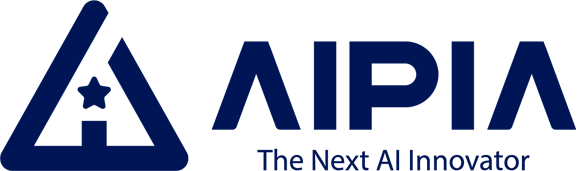

About me
At work, I focused on research, fine-tuning, and experimentation with the OpenAI API and open-source models. Outside of work, I engaged in study projects and prototype development, participating in competitions and academic paper submissions. My main interest lies in exploring how AI can function as a companion through human interaction and what combinations of elements enable such meaningful experiences.
Experience

AIPIA
2025.10 ~ Current
- Fine-tuned an image model using a small dataset provided by the content team
- Developed a custom ComfyUI node that integrates S3 image storage, AWS RDS (MySQL) metadata management, and Google Cloud Vertex AI embedding generation into a unified workflow
AIO2O
2023.09 ~ 2025.03
- Participated in government-funded and PoC projects, focusing on LLM and AI development
- Contributed to OpenAI API integration, prompt design, Hugging Face model research, LoRA fine-tuning, and preparation of papers and government project documentation
2022.03 ~ 2023.09
- Participated in a Named Entity Recognition (NER) project requested by another department, and later supported a bone X-ray segmentation project after a team transfer
- Researched and tested various models primarily through Papers with Code and GitHub
Publications
Projects
Live2D Voice Chatbot Demo
2025.01 ~ 2025.02
- Implemented voice-based dialogue using the OpenAI API and a Live2D sample character
gpt-4o-audio-preview, Whisper, Flask, JavaScript, Vercel
Real Estate Search Prototype
2024.12
- Developed a Streamlit-based prototype for Korean real estate search.
Crawl4AI, PandasAI, OpenAI API, Streamlit
Social-AI Voice Dialogue in Cooperative Game
2021.02 ~ 2022.02
- Contributed to the development of a rule-based voice recognition dialogue system that operates in the game Don't Starve Together
MS Azure STT/TTS, pyttsx3, Lua, OBS